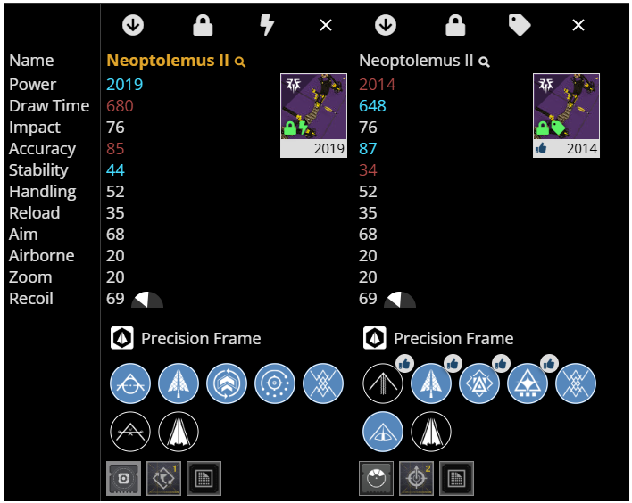
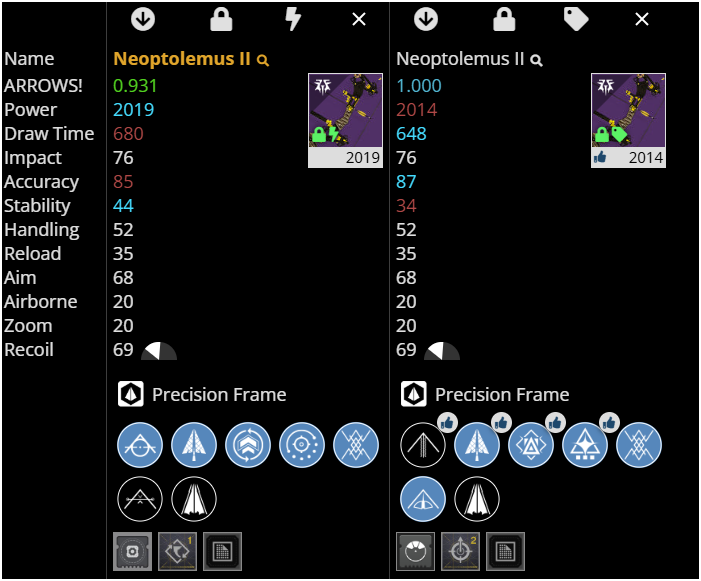
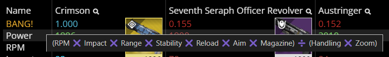

{kind=link}
{kind=link}
{kind=link}

It is a browser extension designed to add information I find useful to DIM (Destiny Item Manager) .
When comparing weapons in DIM, this extension helped me quickly identify which one was "best".
When comparing two or more weapons, this extension reads each weapon's stats to calculate a score, displays that score below each weapon's name, and lets you sort the weapons by their score. The "best" score is shown in cyan as "1.000" and the numbers get smaller and redder from there.
It updates DIM's "Compare Items" UI (the part circled in green in the screenshot).
To something like this:
| Before | After |
|---|---|
|  |  |
See the green rectangle in the screenshot below? That's where the new stat appears, near the top between the name and the Power stat.
For Combat Bows, the name of this stat is "ARROWS!"
See what names are given to other weapon types!
Prerequisite: The "Compare Items" UI must be open and there must be more than one weapon in it.
 In this screenshot we see a tooltip showing that the Hand Cannon formula is calculated as (RPM ❌ Impact ❌ Range ❌ Stability ❌ Reload ❌ Aim ❌ Magazine) ➗ (Handling ❌ Zoom). The tooltip appears when you hover over the score row's name, in this case "BANG!".
This Hand Cannon formula is derived from my play style, which prefers stats like RPM, Impact, and Stability to be bigger and stats like Handling and Zoom to be smaller.
As a result, Crimson's score is overwhelming because of its high RPM stat.
ℹ️ ProTip: If you don't like how a weapon is skewing the results, you can remove it from the comparison. The remaining scores will be automatically recalculated and there will be a new "best" among them.
For those of you who disagree with any of the formulas, or would like more control over them, please let me know if I should prioritize letting you customize the formulas over adding support for armor or other inventory item types.
Hover over the row name to read the formula in a tooltip.
The scores will recalculate soon after any changes.
If for any reason a weapon's stats change, and that stat is included in the weapon's scoring formula, then this extension will automatically recalculate a weapon's score shortly after DIM becomes aware of those changes. For example:
Sorry, no, that feature was broken by DIM update 8.67.0.
Not as of April 2025, but please let me know if I should prioritize letting you do that, or invite you to send me a pull request if you add that feature yourself.
My biggest time sink in DIM was comparing weapons, so I solved that problem first.
To draw my attention to underleveled weapons that deserve to be infused. If you want to sort by Power, you can always click on the word "Power".
If a perk permanently affects one or more stat numbers (e.g. "+1 Magazine", "-10 Stability"), and the formula includes that stat, and that perk is selected, then the score will reflect that.
If a perk only affects one or more stat numbers as a result of how you play (e.g. "Feeding Frenzy - Each rapid kill with this weapon progressively increases reload speed for a short time."), then that is impossible to account for outside of the game.
In short, this extension doesn't read the perks for each weapon, and therefore doesn't take their effects into account -- unless, as mentioned above, they affect the weapon's stats immediately.
In update 8.67.0, DIM changed how it renders the HTML. My code just messes with the HTML and CSS elements after DIM renders them to your browser; it doesn't change DIM's code, so the two don't play nice sometimes, sorry.
You'll see this visual corruption when sorting the items by other stats, or by adding or removing items. If the corruption doesn't go away by itself after a few seconds, then just close and reopen the Compare Items UI.
{kind=link}